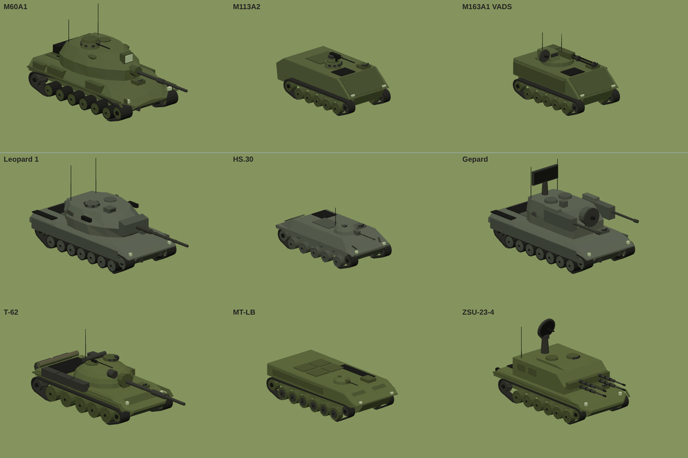
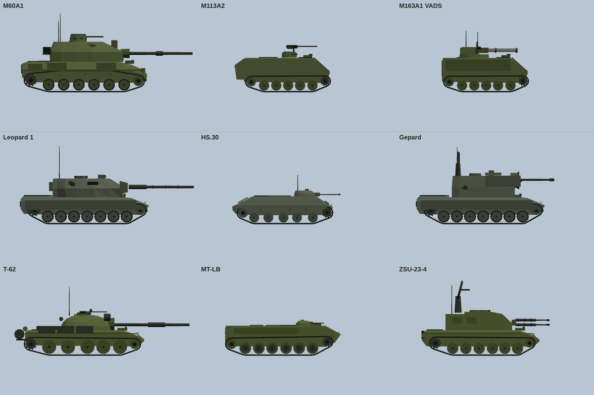
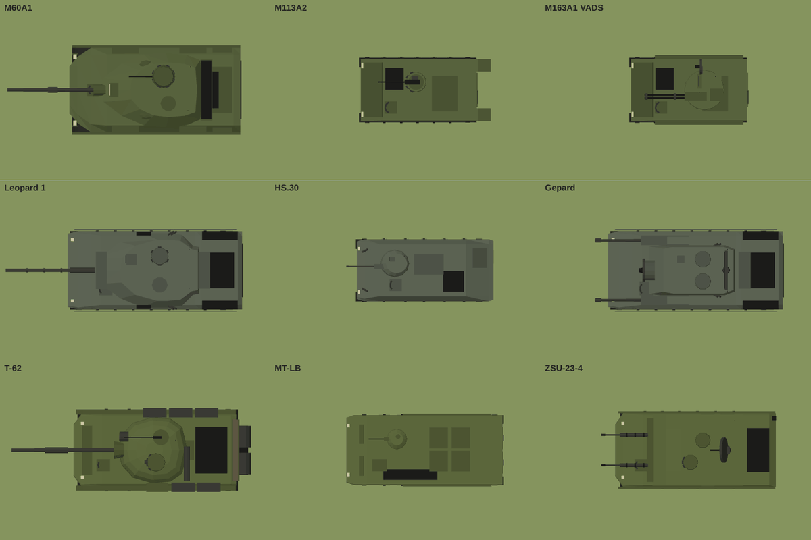
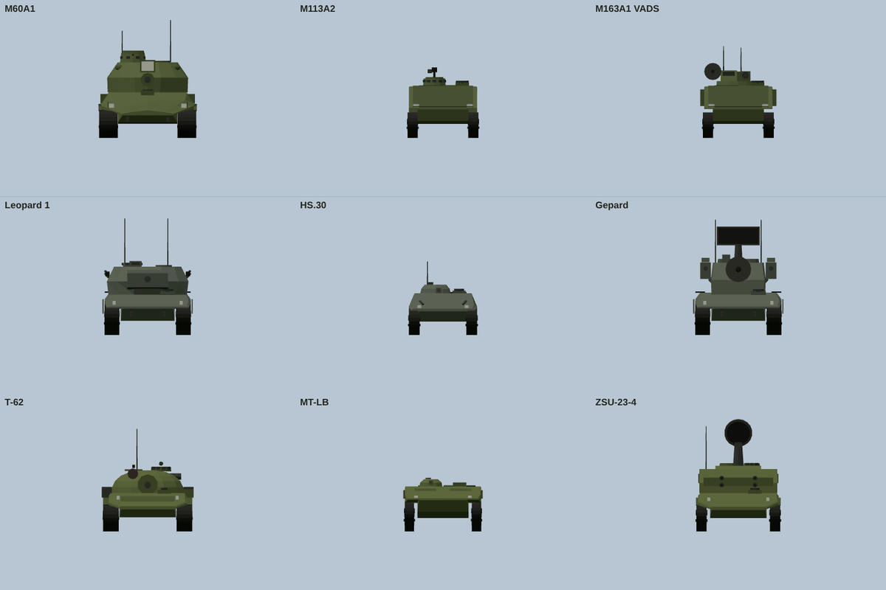
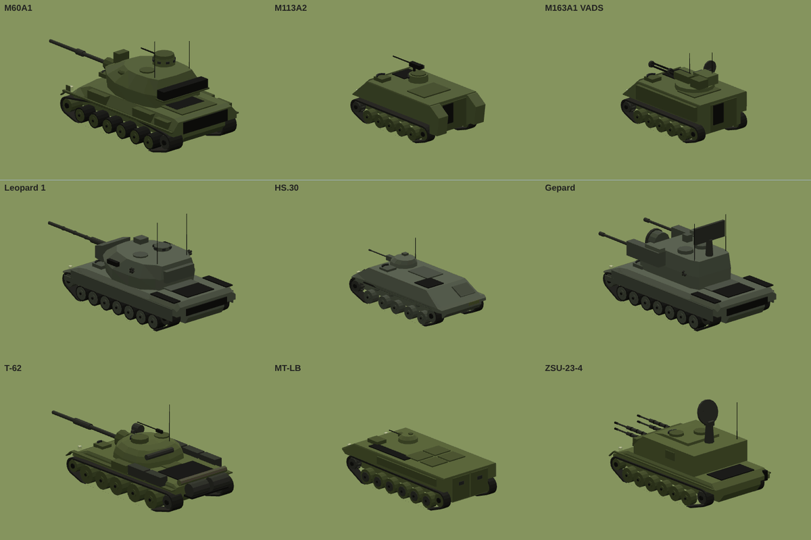
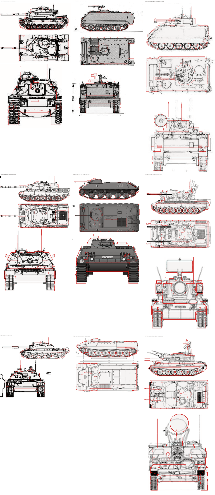
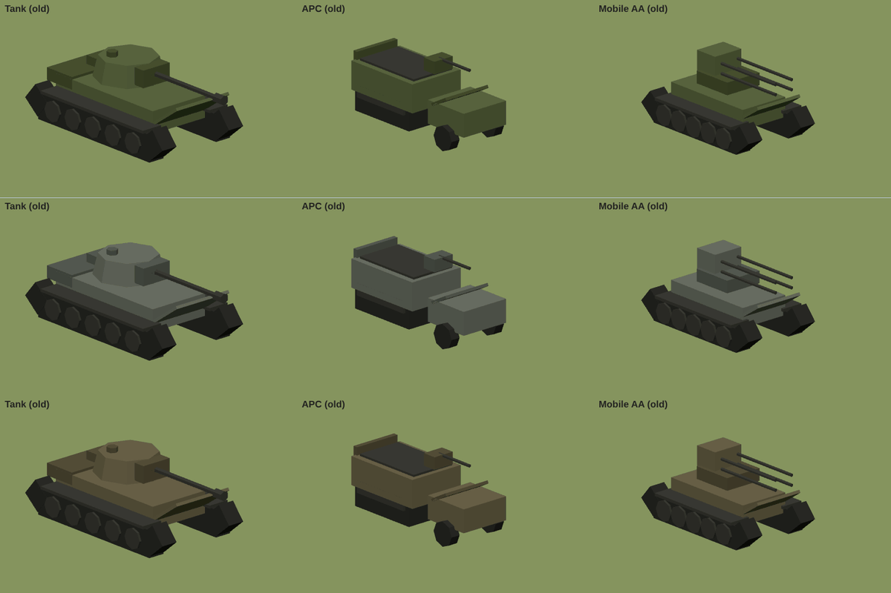

Nine real ground vehicles, built from the drawings
7 October 2026
Every nation used to field the same generic tank, carrier and mobile AA gun, just painted in its own colours. Now each side has its own armour, and every model was built from scratch off a three-view drawing of the real vehicle. Each model was then rendered at true scale and laid over its drawing, and anything that didn't line up was fixed.
Federation of Verländ: M60A1 tank (105mm), M113A2 carrier (.50 cal), M163 VADS (20mm Vulcan, 1.9 km).
Republic of Aurelia: Leopard 1 tank (105mm, the fastest), HS.30 carrier (20mm cannon), Gepard (twin 35mm with radar, 3.3 km).
Sotov Union: T-62 tank (115mm, the hardest hitting), MT-LB carrier (7.62mm PKT), ZSU-23-4 Shilka (quad 23mm with radar, 2.5 km).
The running gear follows each drawing: the number of road wheels and return rollers, and whether the sprocket is at the front (M113, HS.30, MT-LB) or the rear. Turrets carry their own details, such as the M60's cupola and searchlight, the Leopard's spaced armour, the T-62's IR light and the Shilka's radar dish.
The line-up

Top to bottom: Verländ, Aurelia, Sotov. Left to right: tank, carrier, mobile AA.
Side

Side views.
Top

Top views.
Front and rear

Front views.

Rear three-quarter views.
Checked against the drawings

Each model's outline (red) laid over its drawing at true scale. Top to bottom: M60A1, M113A2 and M163; Leopard 1, HS.30 and Gepard; T-62, MT-LB and ZSU-23-4.
Before

The old shared models, for comparison.
Every missile, rocket and SAM rebuilt
7 October 2026
Until now most of Skyfront's weapons were the same generic tube with four fins, just scaled up or down, and every ship-launched SAM looked like an SA-2. This update gives all 31 weapons their own model, built to the real weapon's dimensions with its real fin and wing layout, nose and seeker shape, and paint scheme. Each one was checked against period photographs.
Ship SAMs are now themselves: Tartar, Terrier, Sea Slug, Sea Cat, Volna and Shtorm each have their own shape.
Boosters drop away after launch on the SA-2, Terrier, Sea Slug, Volna, Harpoon, P-15 and P-35.
Folding fins sit flat on the pylon and spring out once the weapon is away: the S-5, R4M, FFAR and 2 in rockets, and the ventral fins on the Kh-22 and Rascal.
Each sheet shows the side, front, three-quarter and top views.
Air-to-air
R-98 (Su-15), AIM-4 Falcon (F-102A), Red Top and Firestreak (Lightning).
Air-to-surface
Kh-22 (Tu-22), Martel and Sea Eagle (Buccaneer), GAM-63 Rascal (B-47), SS.11 (H-34) and 9M17 Falanga (Mi-4).
Ship-launched anti-ship missiles
RGM-84 Harpoon, MM38 Exocet, P-15 Termit and P-35, shown with their boosters attached.
Surface-to-air
SA-2, Tartar, Terrier, Sea Slug with its four wrap-around boosters, Sea Cat, Volna and Shtorm.
Unguided rockets
WGr. 21, HVAR, RS-82, R4M, ARS-212, S-5, Mk 4 FFAR, RP-3 and the British 2 in rocket, as carried.
Fins out
In flight: the folding fins spring out and the Kh-22 and Rascal drop their ventral fins.